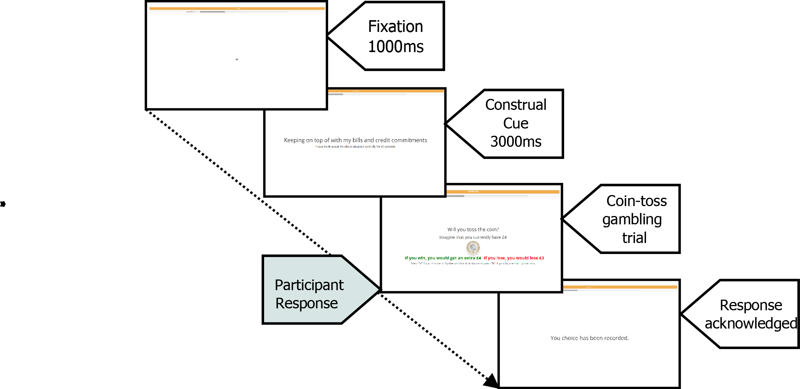
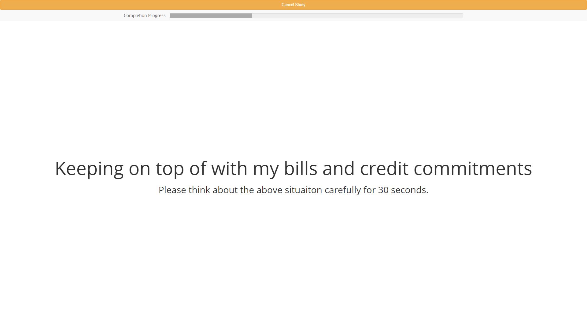
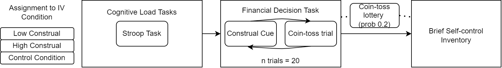
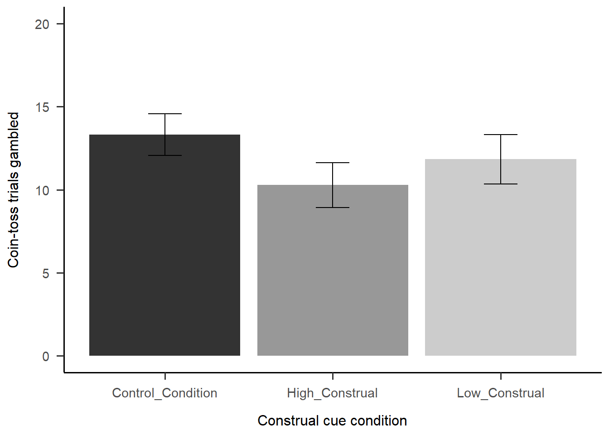
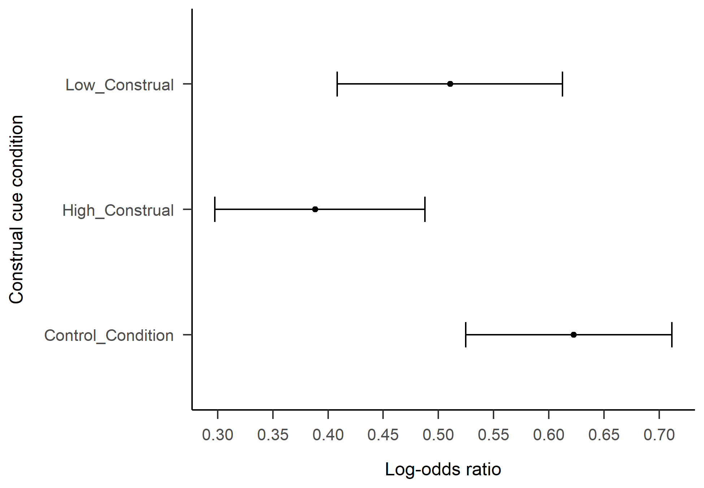
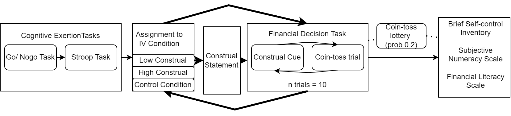
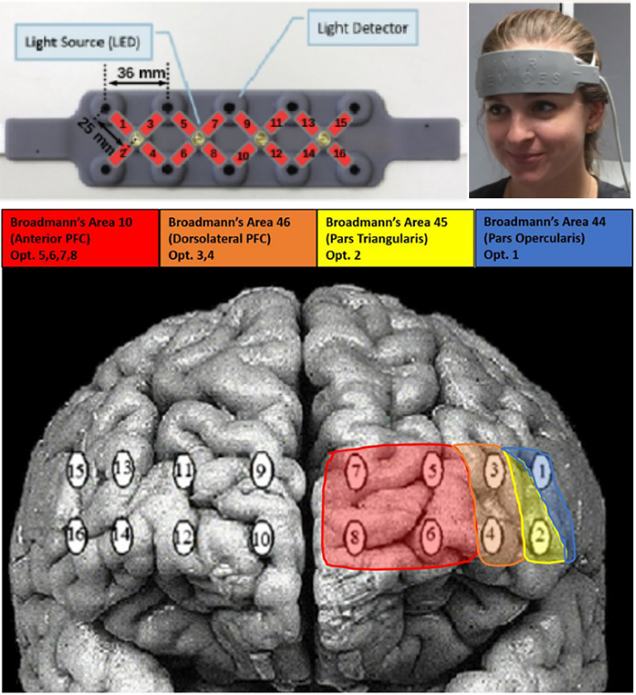
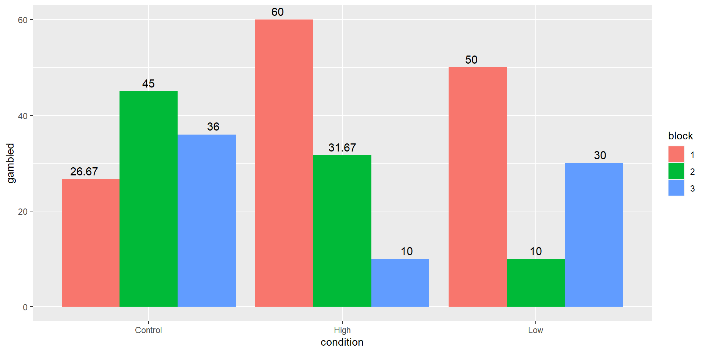

Examining the effects of construal on financial decision-making using fNIRS
BPS Cognitive Section Conference, Sept 2022
Christopher J. Wilson, Ph.D
Centre for Applied Psychological Science, Teesside University
Cognitive effects of financial distress
Financial distress can increase cognitive load (Mani et al., 2020; Vohs, 2013)
This can affect cognitive processes such as planning, reasoning and decision-making (de Bruijn & Antonides, 2022; Hinson et al., 2003; Hofmann et al., 2012; Mani et al., 2013; Roby & Scott, 2022).
- Need to attend to finances constantly / stress is draining
- Payday effect - closer to payday = less money more resource needed to manage
- Need to constantly exercise self control
Self-control depletion and financial decisions
Self-control is a limited cognitive resource and exhausting that resource affects subsequent behaviour (“ego depletion” : Baumeister, 2014; Baumeister et al., 1998; Baumeister et al., 2006, 2008; Baumeister & Vohs, 2018)
Self-control depletion might affect financial or risk-based decisions (Fischer et al., 2012; Gerhardt, 2017; Koppel et al., 2019 )
In the lab, a range of tasks have been used to elicit the effect, including those that target affect, attentional control, thought suppression or response inhibition. It has been replicated across labs (Hagger et al., 2016; Hagger et al., 2010)
Self-control depletion and financial decisions
Debate about whether this is self-control, or general cognitive fatigue. (Hagger et al., 2010; Inzlicht et al., 2014)
In the current research, inhibitory control tasks are also used (Stroop, Go-noGo)
For the purposes of this research, we will refer use the term Cognitive Exertion
Construal could moderate the relationship between CL and financial decisions
Construal level (Trope & Liberman, 2003) can affect financial decisions (Schmeichel et al., 2011; Ülkümen & Cheema, 2011)
Construal theory:
- High-level construal = thinking about goals in a more abstract sense such as why we are trying to achieve a goal
- Low-level construal = thinking in more detail about the necessary steps to achieve a goal
Construal is both a cause and consequence of cognitive exertion effect (Bruyneel & Dewitte, 2012; Khenfer et al., 2017; Raue et al., 2015; Wan & Agrawal, 2011)
Much of the support offered to those in financial difficulty is knowledge focused
Financial literacy has been shown to increase knowledge and change intentions - but only sometimes examines behaviours (Amagir et al., 2018; Kaiser & Menkhoff, 2020; Mandell & Klein, 2009)
The evidence on efficacy is mixed (Lührmann et al., 2015) and appears to be dependent on many contextual factors (Alessie et al., 2013; Allgood & Walstad, 2016; Chardon et al., 2016; Chen et al., 2018; Foster et al., 2015; Henager & Cude, 2017; Meier & Sprenger, 2013)
Could construal play a role - how information is construed affect subsequent behaviour?
The current research
There is research suggesting construal might mediate cognitive exertion effects (Krastev et al., 2020).
However:
- Direct manipulation of construal is not common
- Lab manipulations of construal are often generic, as opposed to context specific
- There is a dearth of work examining the effects at neurological level
General Overview
- In 2 lab-based studies, participants are exposed to cognitive exertion task(s), followed by a financial decision task where each trial is preceded by a construal cue (low/high or control condition)
Research Questions
Study 1: Following cognitive exertion, how does construal affect financial decision-making?
Study 2: Are there any neurological indicators that distinguish high- and low-construal decisions?
Financial decision task: Studies 1 and 2
Financial decision task: Construal cues
Financial decision task: Coin Toss Decision
Financial decision task: Coin Toss Trials
n trials = 20
Expected value of trials calculated as:
value of gain * probability of gain - value of loss * probability of loss
Expected value of trials: 0, 2.5, 5, 7.5, 10
Study 1: Design
1-way independent, experimental design with 3 conditions.
IV: construal level (High-Construal, Low-Construal and Control condition).
Construal cues were presented as part of the financial decision (coin-toss gamble) task (adapted from Brevers et al., 2018).
DV: Did participants gamble on coin-toss trials? (yes/no)
Study 1: Participants
76 participants took part, 75 completed the study
11 males, 64 females
Random allocation to conditions resulted in the following independent groups:
Condition n Control Condition 26 High Construal 25 Low Construal 24
Study 1: Procedure

Participants are informed that they will be entered into a lottery at the end of the study
If they are randomly selected, one of their coin-tosses will be chosen and they can win the outcome of that specific toss for real
“Your choices in this task do matter”
Study 1: Results
Mean trials gambled in each condition
Model 1: Does expected value predict likelihood of gambling?
The model was a significantly better fit than the null model (\(χ^2(4) = 441.47, p < 0.01)\) , Pseudo \(R^2\) (fixed effects) = 0.30
A significant likelihood of not gambling when expected value of the coin-toss was 0 and significant likelihood of gambling in trials with higher expected values than 0 (with the exception of the Expected Value at 2.5)
Model 2: Does construal condition predict likelihood of gambling?
Model 2 was a significantly better fit than Model 1 \((χ^2(2) = 10.60, p < 0.01)\) , \(\delta\)AIC = -6.6, Pseudo \(R^2\) (fixed effects) = 0.32
Examination of the coefficients showed that both Low Construal and High Construal were significant High Construal Condition (β = -0.97, p < 0.01) compared to the Low Construal Condition (β = -0.49, p < 0.05).
Model 2: Comparison of lsmeans between condition
Pairwise comparison of the groups showed that High Construal was significantly different to the Control Condition
Model 3: Does self control predict likelihood of gambling?
- Adding self control (BSCI score) did not have a significant effect on the model (\(\delta\)AIC = 1.23, p > 0.05)
Study 1 Discussion / Study 2 additions
There is an effect of construal - High Construal associated with lowest probability of “gambling” and Control condition the highest
Changes to Study 2:
- Increase cognitive exertion effect with additional inhibition task
- Make construal more explicit by having participants write construal-level statements before each condition/block
Study 2: Research Question
Do the behavioural results replicate Study 1?
Are there different patterns of neurological activation associated with high- and low-construal conditions?
E.g., during the construal cue period immediately preceding the coin-toss decision
Study 2: Design and Procedure

- Within-groups design necessitated by fNIRS
- Planned N = 33
Study 2: fNIRS

Markers sent via serial/usb to fNIRS for specified events
Levels of hbO and hbR are calculated during certain time periods relative to baseline
Study 2: current status
Current N = 13
No inferential analysis run yet
We can observe fNIRS patterns of activation
fNIRS analysis - preprocessing
Data analysed using a custom R script (will be available on Github)
Preprocessing to remove noise, movement artifacts etc:
.1 Hz Lowpass filter (heartrate, respiration)
Moving average filter (1.5s)
Linear detrending
fNIRS analysis - block level analysis
Looking at mean levels of activation across trial types (i.e. different construal conditions) for each participant
Construal cue provides 30sec window - fNIRS activation usually 5-7secs
Preliminary findings
fNIRS analysis and financial decisions
Previous studies have shown right DLPFC was found to be more deactivated under challenging risk decision making (Wanniarachchi et al., 2020).
DLPFC hemodynamic signals reflected a subjective value signal, correlating positively with individual risk attitude (Holper et al., 2014)
Activation in prefrontal areas especially targeted during the experience of gains and losses (Holper et al., 2014)
Changes in oxygenated hemoglobin (HbO) concentrations during the 5-second period right after the decision was made (Li et al., 2012)
fNIRS: visualising activity - during construal cues
Behavioural data: mean % gambled (block * condition)
There might be an effect of Block as well as Condition
Discussion / conclusions
Current status
Study 1 shows an effect of construal on gambling decisions
Study 2 preliminary data indicates possible differences in neurological activity between conditions - not yet tested
A lot more data yet to include when Study 2 models are tested (financial literacy, numeracy etc.)
Further work?
Will continue to explore Cognitive Load / Exertion effects on financial decisions
Looking at more complex / ecologically-valid decisions
Keep improving manipulations and manipulation checks
Thank you
Christopher.Wilson@tees.ac.uk
@CWilsonPsych
References
Alessie, R., Bucher-Koenen, T., Lusardi, A., & van Rooij, M. (2013). Gender, confidence and financial literacy. NeuroPsychoEconomics Conference Proceedings, 16.
Allgood, S., & Walstad, W. B. (2016). The effects of perceived and actual financial literacy on financial behaviors. Economic Inquiry, 54(1), 675–697. https://doi.org/10.1111/ecin.12255
Amagir, A., Groot, W., Maassen van den Brink, H., & Wilschut, A. (2018). A review of financial-literacy education programs for children and adolescents. Citizenship, Social and Economics Education, 17(1), 56–80. https://doi.org/10.1177/2047173417719555
Baumeister, R. F. (2014). Self-regulation, ego depletion, and inhibition. Neuropsychologia, 65, 313–319. https://doi.org/10.1016/j.neuropsychologia.2014.08.012
Baumeister, R. F., Bratslavsky, E., Muraven, M., & Tice, D. M. (1998). Ego Depletion: Is the Active Self a Limited Resource? Journal of Personality and Social Psychology, 74(5), 1252–1265. https://doi.org/10.1037/0022-3514.74.5.1252
Baumeister, R. F., Gailliot, M., DeWall, C. N., & Oaten, M. (2006). Self-Regulation and Personality: How Interventions Increase Regulatory Success, and How Depletion Moderates the Effects of Traits on Behavior. Journal of Personality, 74(6), 1773–1802. https://doi.org/10.1111/j.1467-6494.2006.00428.x
Baumeister, R. F., Sparks, E. A., Stillman, T. F., & Vohs, K. D. (2008). Free will in consumer behavior: Self-control, ego depletion, and choice. Journal of Consumer Psychology, 18(1), 4–13. https://doi.org/10.1016/j.jcps.2007.10.002
Baumeister, R. F., & Vohs, K. D. (2018). Strength model of self-regulation as limited resource: Assessment, controversies, update. In Self-Regulation and Self-Control (pp. 78–128). Routledge.
Brevers, D., Foucart, J., Turel, O., Bertrand, A., Alaerts, M., Verbanck, P., Kornreich, C., & Bechara, A. (2018). The Impact of Self-Control Cues on Subsequent Monetary Risk-Taking. Journal of Behavioral Addictions, 7(4), 1044–1055. https://doi.org/10.1556/2006.7.2018.97
Bruyneel, S. D., & Dewitte, S. (2012). Engaging in self-regulation results in low-level construals. European Journal of Social Psychology, 42(6), 763–769. https://doi.org/10.1002/ejsp.1896
Chardon, T., Freudenberg, B., & Brimble, M. (2016). Tax literacy in Australia: Not knowing your deduction from your offset. Australian Tax Forum, 31(2), 321–362.
Chen, J., Jiang, J., & jane Liu, Y. (2018). Financial Literacy and Gender Difference in Loan Performance. Journal of Empirical Finance, 48, 307–320. https://doi.org/10.1016/j.jempfin.2018.06.004
de Bruijn, E.-J., & Antonides, G. (2022). Poverty and economic decision making: A review of scarcity theory. Theory and Decision, 92(1), 5–37. https://doi.org/10.1007/s11238-021-09802-7
Fischer, P., Kastenmüller, A., & Asal, K. (2012). Ego Depletion Increases Risk-Taking. The Journal of Social Psychology, 152(5), 623–638. https://doi.org/10.1080/00224545.2012.683894
Foster, F. D., Ng, J., & Wee, M. (2015). Presentation Format and Financial Literacy: Accessibility and Assessability of Retirement Savings Statements. Journal of Consumer Affairs, 49(3), 519–549.
Gerhardt, H. (2017). Does Self-Control Depletion Affect Risk Attitudes? European Economic Review, 25.
Hagger, M. S., Chatzisarantis, N. L. D., Alberts, H., Anggono, C. O., Batailler, C., Birt, A. R., Brand, R., Brandt, M. J., Brewer, G., Bruyneel, S., Calvillo, D. P., Campbell, W. K., Cannon, P. R., Carlucci, M., Carruth, N. P., Cheung, T., Crowell, A., De Ridder, D. T. D., Dewitte, S., … Zwienenberg, M. (2016). A Multilab Preregistered Replication of the Ego-Depletion Effect. Perspectives on Psychological Science, 11(4), 546–573. https://doi.org/10.1177/1745691616652873
Hagger, M. S., Wood, C., Stiff, C., & Chatzisarantis, N. L. D. (2010). Ego depletion and the strength model of self-control: A meta-analysis. Psychological Bulletin, 136(4), 495–525. https://doi.org/10.1037/a0019486
Henager, R., & Cude, B. J. (2017). Financial Literacy and Long- and Short-Term Financial Behavior in Different Age Groups. Journal of Financial Counseling and Planning, 27(1), 3–19. https://doi.org/10.1891/1052-3073.27.1.3
Hinson, J. M., Jameson, T. L., & Whitney, P. (2003). Impulsive decision making and working memory. Journal of Experimental Psychology: Learning, Memory, and Cognition, 29(2), 298–306. https://doi.org/10.1037/0278-7393.29.2.298
Hofmann, W., Vohs, K. D., & Baumeister, R. F. (2012). What People Desire, Feel Conflicted About, and Try to Resist in Everyday Life. Psychological Science, 23(6), 582–588. https://doi.org/10.1177/0956797612437426
Holper, L., ten Brincke, R. H. W., Wolf, M., & Murphy, R. O. (2014). fNIRS derived hemodynamic signals and electrodermal responses in a sequential risk-taking task. Brain Research, 1557, 141–154. https://doi.org/10.1016/j.brainres.2014.02.013
Inzlicht, M., Schmeichel, B. J., & Macrae, C. N. (2014). Why Self-Control Seems (but May Not Be) Limited. Trends in Cognitive Sciences, 18(3), 127–133. https://doi.org/10.1016/j.tics.2013.12.009
Kaiser, T., & Menkhoff, L. (2020). Financial education in schools: A meta-analysis of experimental studies. Economics of Education Review, 78, 101930. https://doi.org/10.1016/j.econedurev.2019.101930
Khenfer, J., Laurin, K., Tafani, E., Roux, E., & Kay, A. C. (2017). Interventionist external agents make specific advice less demotivating. Journal of Experimental Social Psychology, 73, 189–196. https://doi.org/10.1016/j.jesp.2017.07.003
Koppel, L., Andersson, D., Västfjäll, D., & Tinghög, G. (2019). No Effect of Ego Depletion on Risk Taking. Scientific Reports, 9(1), 1–10. https://doi.org/10.1038/s41598-019-46103-0
Krastev, S., Pilat, D., Martin, M., Montenegro, M., & Struck, B. (2020). Construal level as a mediator of stress-induced bias in financial decision making [Preprint]. PsyArXiv. https://doi.org/10.31234/osf.io/hr8nk
Li, L., Lin, Z.-J., Cazzell, M., & Liu, H. (2012). Measurement of brain activations to examine gender-specific risk decision making using functional near infrared spectroscopy (fNIRS). In Biomedical Optics, BIOMED 2012. https://doi.org/10.1364/BIOMED.2012.BTu3A.34
Lührmann, M., Serra-Garcia, M., & Winter, J. (2015). Teaching teenagers in finance: Does it work? Journal of Banking & Finance, 54, 160–174.
Mandell, L., & Klein, L. S. (2009). The Impact of Financial Literacy Education on Subsequent Financial Behavior ({{SSRN Scholarly Paper}} No. 2224231).
Mani, A., Mullainathan, S., Shafir, E., & Zhao, J. (2013). Poverty Impedes Cognitive Function. Science, 341(6149), 976–980. https://doi.org/10.1126/science.1238041
Mani, A., Mullainathan, S., Shafir, E., & Zhao, J. (2020). Scarcity and Cognitive Function around Payday: A Conceptual and Empirical Analysis. Journal of the Association for Consumer Research. https://doi.org/10.1086/709885
Meier, S., & Sprenger, C. D. (2013). Discounting financial literacy: Time preferences and participation in financial education programs. Journal of Economic Behavior & Organization, 95, 159–174.
Raue, M., Streicher, B., Lermer, E., & Frey, D. (2015). How far does it feel? Construal level and decisions under risk. Journal of Applied Research in Memory and Cognition, 4(3), 256–264. https://doi.org/10.1016/j.jarmac.2014.09.005
Roby, E., & Scott, R. M. (2022). Financial concern reduces child directed speech in a socioeconomically diverse sample. Scientific Reports, 12(1), 9173. https://doi.org/10.1038/s41598-022-13177-2
Schmeichel, B. J., Vohs, K. D., & Duke, S. C. (2011). Self-Control at High and Low Levels of Mental Construal. Social Psychological and Personality Science, 2(2), 182–189. https://doi.org/10.1177/1948550610385955
Trope, Y., & Liberman, N. (2003). Temporal construal. Psychological Review, 110(3), 403.
Ülkümen, G., & Cheema, A. (2011). Framing Goals to Influence Personal Savings: The Role of Specificity and Construal Level. Journal of Marketing Research, 48(6), 958–969. https://doi.org/10.1509/jmr.09.0516
Vohs, K. D. (2013). The Poor’s Poor Mental Power. Science, 341(6149), 969–970. https://doi.org/10.1126/science.1244172
Wan, E. W., & Agrawal, N. (2011). Carryover Effects of Self-Control on Decision Making: A Construal-Level Perspective. Journal of Consumer Research, 38(1), 199–214. https://doi.org/10.1086/658471
Wanniarachchi, H., Lang, Y., Wang, X., Nerur, S., Chen, K.-Y., & Liu, H. (2020). Neural correlates of newsvendor-based decision making in the human brain: An exploratory study to link neuroeconomics with neuroimaging using fNIRS (p. 2020.02.08.940197). Cold Spring Harbor Laboratory. https://doi.org/10.1101/2020.02.08.940197